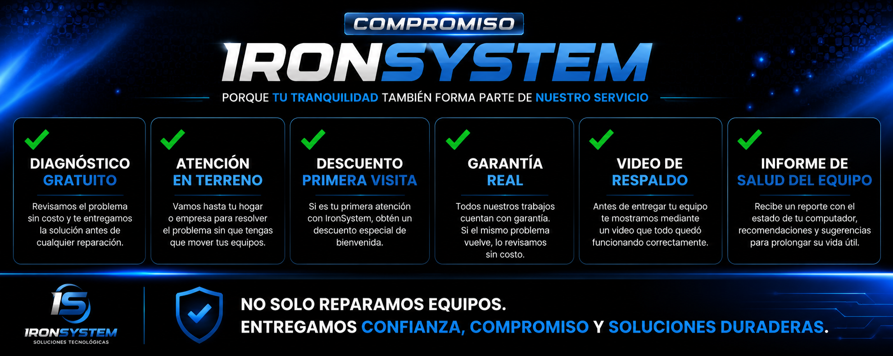
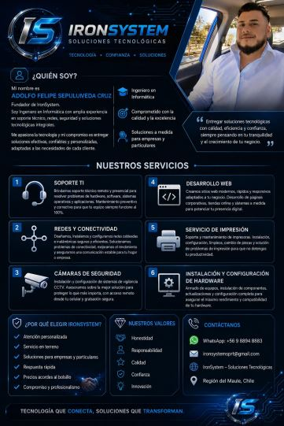
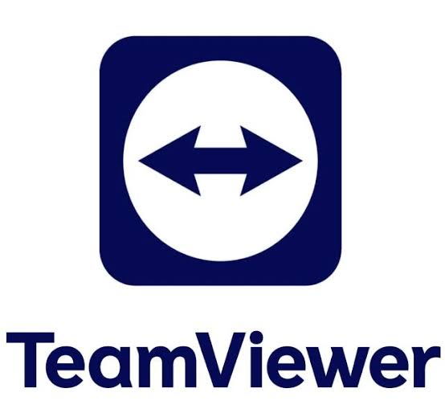

Mantención, reparación, configuración de equipos, instalación de software y soporte remoto.
Instalación y configuración de redes, routers, WiFi empresarial y cableado.
Instalación de sistemas CCTV para hogares y empresas.
Creación de páginas web profesionales para emprendimientos y empresas.
Instalación, configuración y solución de problemas en impresoras láser e inyección de tinta para hogares y empresas.
Instalación, configuración y actualización de componentes de hardware, incluyendo discos SSD, memoria RAM, tarjetas de video, impresoras y periféricos para optimizar el rendimiento de tus equipos.

Descarga nuestro catálogo y conoce todas las soluciones tecnológicas que IronSystem tiene para ti.

Soy el fundador de IronSystem, un proyecto orientado a entregar soluciones tecnológicas confiables para empresas y usuarios particulares.
Cuento con experiencia en soporte TI, redes, configuración de equipos, instalación de software, infraestructura tecnológica y atención en terreno.
Mi objetivo es entregar un servicio profesional, cercano y adaptado a las necesidades de cada cliente.
¿Necesitas asistencia remota? Descarga una de las siguientes herramientas para que un técnico de IronSystem pueda ayudarte de forma rápida y segura.

Utiliza TeamViewer para permitir el acceso remoto cuando un técnico lo solicite.
Descargar🔒 Nunca compartas el código de acceso con personas desconocidas. IronSystem solo solicitará conexión cuando tú hayas solicitado asistencia.
📧 ironsystemsprt@gmail.com
WhatsApp +56 9 88948883
Servicios TI en la Región del Maule (Parral)